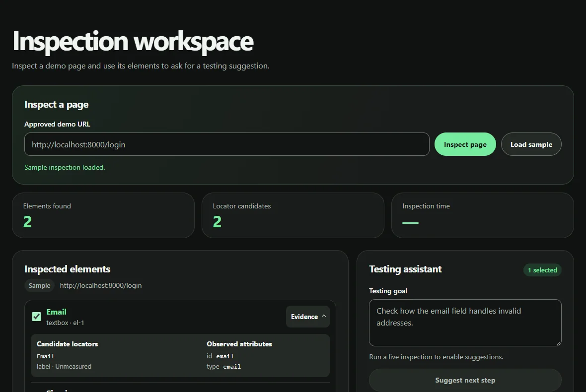

FastAPI · JavaScript · Playwright
Human-in-the-Loop Web Testing Assistant
I built the dashboard where testers select page elements, review the locator evidence, and ask for a testing suggestion based on their selection.


From inspection to suggestion
A tester loads an inspection, selects the elements relevant to the goal, and opens the evidence panel to review candidate locators and observed attributes. The dashboard puts the suggestion beside the evidence used to request it.